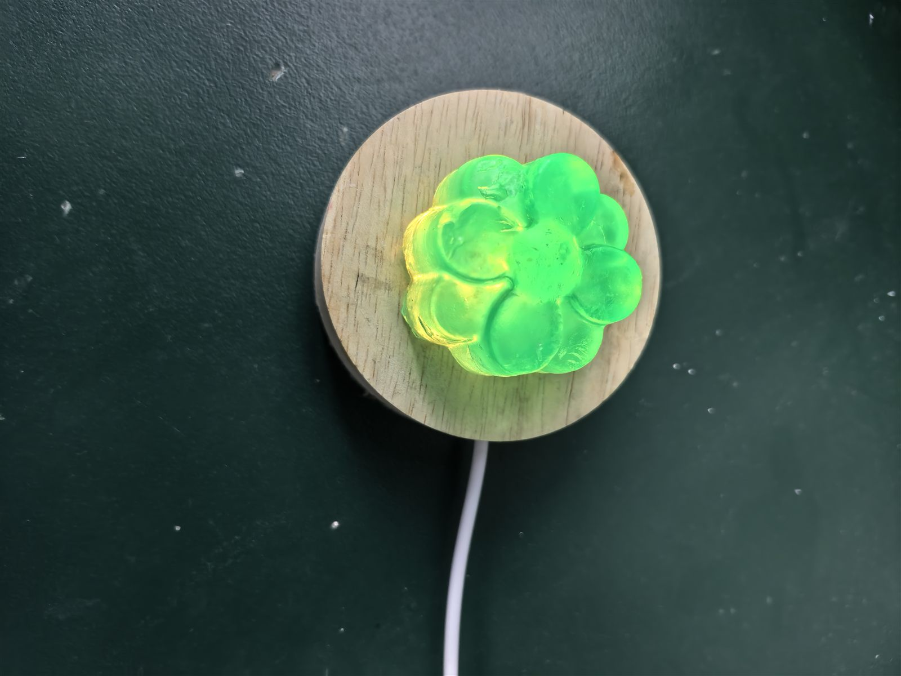
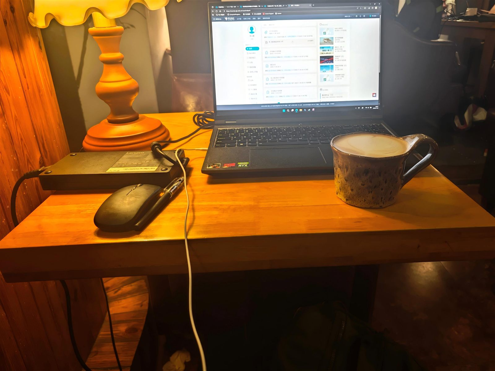
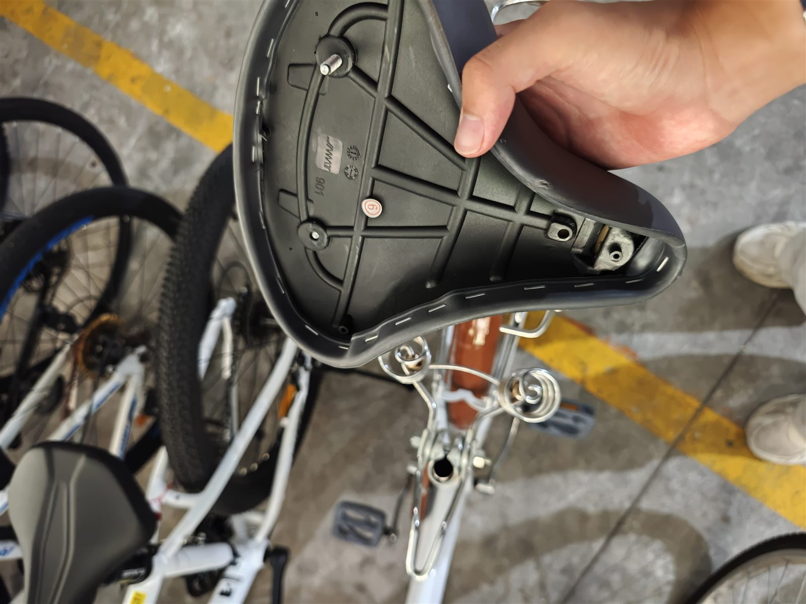

LW
李汶徽
主页
游戏开发
建模作品
图形学
日常生活
游戏开发者 / 创作者
李汶徽
记录学习与生活



WELCOME
欢迎光临
</>
3D
PLAY
→
以技术为笔，
描绘想象中的世界。
游戏项目
02
内容方向
04
学习专题
01
生活照片
05
EXPLORE
01 / 游戏开发
荒芜之地
独立完成程序、策划与美术的 2.5D 动作 Roguelike。
查看项目
→
02 / 计算机图形学
GAMES101 笔记
从变换、光栅化到光线追踪的学习记录。
阅读笔记
→
03 / 日常生活
看见的，留下
收藏路上的风景，也收藏普通日子的微光。
翻看相册
→